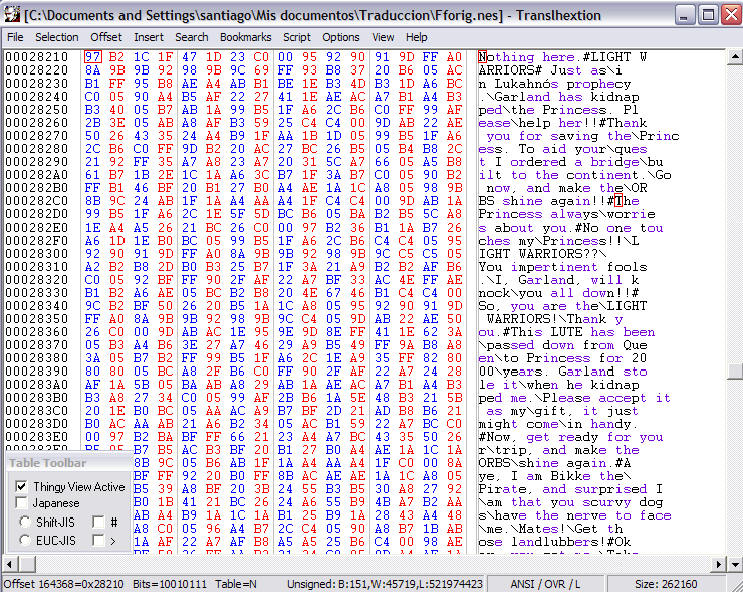
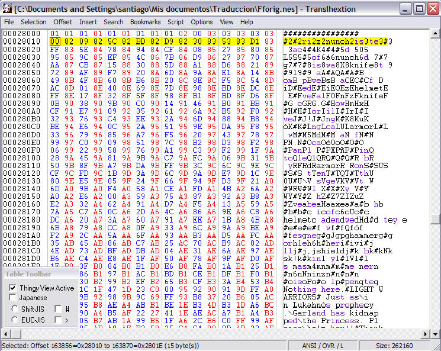
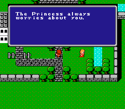

Por DaRKWiZaRDX
¡ANTES QUE NADA RECUERDA SIEMPRE HACER COPIAS DE SEGURIDAD DE LA ROM!
Te preguntarás qué son los punteros, ya que apenas los he mencionado en lo que va de la guía y, si has estado leyendo algún foro o simplemente noticias sobre traducción, seguramente habrás escuchado algo sobre ellos, pues bueno, aquí haré una simple explicación de su utilidad y cómo funcionan.
Los punteros son valores hexadecimales que indican al juego el offset (la dirección) de donde tiene que leer un texto (o una rutina, o valor de RAM, pero como esto se trata de traducciones de texto dejémoslo ahí). Son valores hexadecimales (en muchos casos de 2 bytes, pero los hay de 1, 2, 3 y 4 bytes hasta donde sé) que el juego lee en una rutina (la rutina de escribir texto) y lee para poner en pantalla.
"¿Y qué tiene que ver esto con la traducción?" - te preguntarás. Es bastante
simple, modificando punteros podemos indicarle al juego donde comienza tal
diálogo, y así podremos aprovechar el espacio que nos sobró de traducciones en
la que ganamos lugar y aprovecharlo para traducciones más largas.
Imagínate el siguiente caso: (los numerales (#) son códigos de fin de bloque o
message break):
"Hi.#What the hell is going on?#".
Podríamos traducirlo como:
"Hola.#¿Qué demonios sucede?####"
y nos sobre espacio, pero si probamos el juego después de realizar tal
modificación seguramente el juego nos mostrará bien el primer diálogo, pero si
vas en el juego a la sección donde diría "What the hell is going on?" te
aparecerá "." ... Veamos qué fue lo que sucedió...
En la ROM se encuentran ciertos valores que indican en qué offset está el inicio del diálogo, nosotros cambiamos el tamaño de los diálogos (cambiando de lugar el byte de fin de bloque, aquí representado con un numeral '#') pero no modificamos los punteros, para hacerlo más fácil, a estos bytes es adonde "apuntaban" los punteros.
"Hi.#What
the hell is going on?#"
"Hola.#¿Qué
demonios sucede?####"
(Las letras en verde son los offsets a los que apuntaban los punteros).
Como ves el puntero apuntaba al punto, =P entonces escribe el punto en pantalla, luego encuentra el código de fin de bloque y deja de escribir, es por eso que solo vemos "." ... Lo que debemos hacer es cambiar el puntero para que apunte al '¿' que da comienzo a la frase.
Para calcular un punteros hay varias formas, ésta es la más común y efectiva:
(NOTA: Ésta es la fórmula para punteros de 16bits, es decir, 2 bytes, busca más
adelante las diferencia para encontrar punteros de 24bits, es decir, de 3 bytes =P)
(NOTA 2: En esta fórmula restaré $200 bytes de header (mira más adelante si no
se entiende) pero recomiendo que para las roms de SNES quites el header (hay
muchas utilidades para hacerlo) ya que en este momento la mayoría de emuladores
soportan ROMs sin cabezal y la verdad te ahorrarás varios dolores de cabeza así
=P, y claro, si la ROM no tiene header deberás saltearte el segundo paso).
(PRIMERO HAY QUE DETERMINAR EL PUNTERO ORIGINAL)
1. Tomar el offset del primer byte del texto (P.Ej: $02C241).
2. Resta el header de la ROM (las ROMs de SNES tienen $200 bytes, las de NES
$10) ($02C241 - $200 = $02C041)
3. Deja los últimos dos bytes ($02C041 pasa a ser $C041)
4. Sepáralos en parejas de dos dígitos ($C041 pasa a ser $C0 y $41).
5. Invierte los bytes ($C0 $41 pasan a ser $41 $C0)
6. Busca ese valor (en este caso $41C0) en la ROM.
7. Lo más probable es que lo encuentres junto a varios valores parecidos ($41C0
$80C0 $02C1).
En ese caso lo más seguro es que hayas encontrado la tabla de punteros, anota la
dirección (un bookmark es más que recomendable) de esa tabla.
8. Es probable que encuentres varias veces el valor en la ROM, si lo encuentras
como en el paso 7 lo más probable es que ese sea el puntero que buscas, pero
sino puedes intentar probando a modificar los valores (Por ejemplo $41C0 podrías
cambiarlo por $40C0 y mira en el juego si el texto cambió en algo).
Si encontramos el valor que buscamos (probamos a modificarlo y en la ROM el texto sale diferente) entonces tenemos nuestro puntero, ahora vamos a modificarlo. Repite los pasos del 1 al 5 pero con el offset del byte de inicio del diálogo modificado. Una vez que lo hayas determinado (en nuestro caso sería $43C0) vuelve a la tabla de punteros o al lugar donde hayas encontrado al puntero original y cámbialo por el nuevo valor (en nuestro ejemplo $41C0 pasaría a ser $43C0). El ThingyV permite editar bytes hexadecimalmente pulsandoe "Alt+T".
Prueba la ROM y verás que el texto se muestra bien. Si no es así revisa el siguiente apartado que quizás el problema esté citado ahí.
Quizás no todos los punteros con los que nos encontremos sean de 16bits y tan fáciles de encontrar como éstos:
Funcionan igual que los de 16bits, excepto que en el paso 3 no debes dejar 2 sino 3 bytes. Al invertirlos el primer byte debe quedar último, el del medio queda en su lugar, y el último queda primero. P.Ej: 0328C4 pasa a ser C42803.
Funcionan de una manera diferente, lo que hacen estos punteros es, en la mayoría de los casos, tener en su valor el número de bytes que contiene el bloque hasta el final, entonces si alargamos el bloque deberemos aumentar el valor en el puntero, y disminuirlo si el bloque es más chico que el original. Ruega no encontrarte con estos porque son realmente complicados.
También puede que encuentres en ocasiones texto que parece no tener tabla de punteros, en estos casos lo mejor es probar cambiando el largo de un bloque y ver si en el juego el siguiente bloque se ve afectado. Algunos juegos lo usan cuando cargan las opciones de menú.
Es bastante común para los nombres de enemigos y/o armas, objetos, etc. en
los RPGs, se trata de texto sin punteros, el juego carga una cantidad de bytes
fija para representar el texto, entonces mientras no nos salgamos de
ese rango podremos alargar la cantidad de letras, un claro ejemplo de esto puede
verse en el Final Fantasy IV de SNES en los nombres de las armas.
Más información sobre éste tipo de punteros puede encontrarse en el documento de
Anus P (busca en google).
Hay muchos tipos más de punteros que no se han logrado descifrar todavía, pero éstos son los más frecuentemente te encontrarás.
Veamos un poco de Final Fantasy I (US) de NES:

El primer texto ("Nothing here") aparece cuando "hablamos" con el aire en algún pueblo. Hagamos que en lugar de ese texto aparezca "The Princess always worries about you." (marqué los dos inicios de bloque con un cuadro rojo para que sean más fáciles de encontrar).
Primero calculamos el offset del primer texto, el offset de la 'N' es $28210.
- Restamos los $10 bytes del header (es una ROM de NES). Así que queda $28200
- Separamos en parejas de dos dígitos ($02 $82 $00)
- Nos quedamos las últimas dos (son punteros de 16bits) ($82 $00)
- Las invertimos ($00 $82)
- Buscamos eso en la ROM (hacia arriba es más común que se encuentren los
punteros).

Como ves el primer byte de esa línea es el puntero, y estamos 99% seguros porque está junto a otros valores similares, así que encontramos la tabla de punteros del juego. Lo que haremos será cambiar este puntero para que muestre otro texto.
Lo que debemos hacer a continuación es averiguar el puntero del diálogo que queremos que aparezca.
El offset es $282CD
- Restamos $10 ($282BD)
- Separamos en parejas ($02 $82 $BD)
- Dejamos las últimas dos ($82 $BD)
- Invertimos ($BD $82)
Ya tenemos nuestro segundo puntero, ahora vamos al primer puntero que encontramos ($0082) y lo cambiamos por $BD82. Guardamos los cambios y probamos la ROM:

¡Misión cumplida!
Los punteros son herramientas muy útiles, ya que nos permitirán aprovechar mejor el espacio que nos sobre de un diálogo para otro, pero si realmente quieres explotarlos para hacerte la traducción mucho más fácil, te recomiendo leas el siguiente y último (w00t!) capítulo de esta guía, el de los scripts, ya que enseña como editar el texto de una ROM con un editor de textos común y luego reinsertarlo y recalcular (automáticamente) los punteros para que todo quede en orden. ¡Ya terminamoooooos! :D